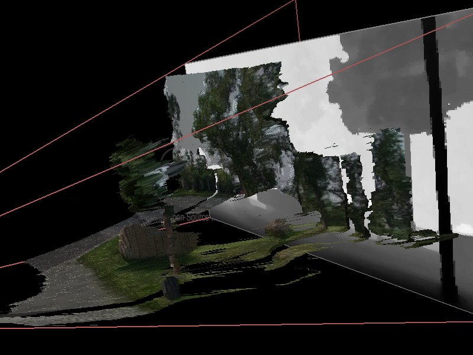

PluginImage distanceFieldFilter
This scene shows what the DepthMapToMesh engine is doing. From an image in black&white (whose gray intensity represent the depth in the space) it creates a mesh where a texture is applied (which is the same picture than the b&w but in color).
